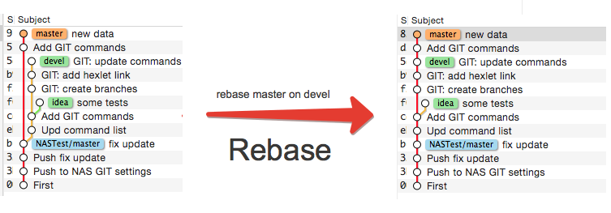
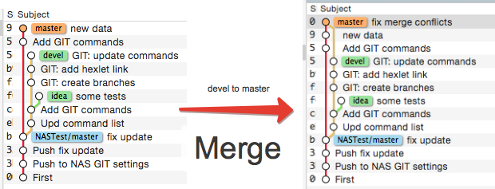
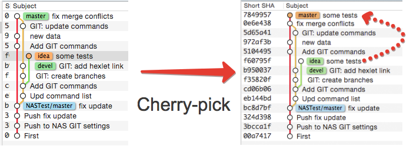

git rebase <branch> - "сшивает" коммиты по дате их создания
git rebase <branch>

git merge <branch> - Добавляет коммиты в конец графа
git merge <branch>

git chery-pick <branch> - Забрать коммиты из ветки в свою
git chery-pick <branch>
